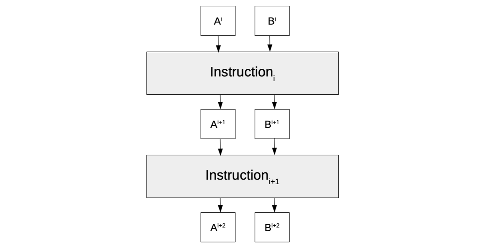
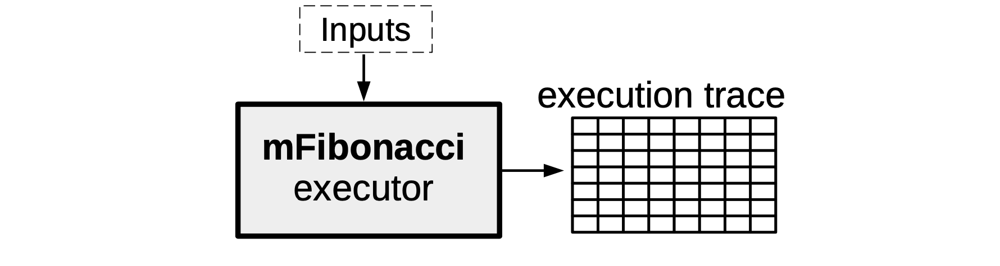
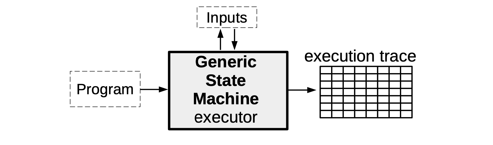
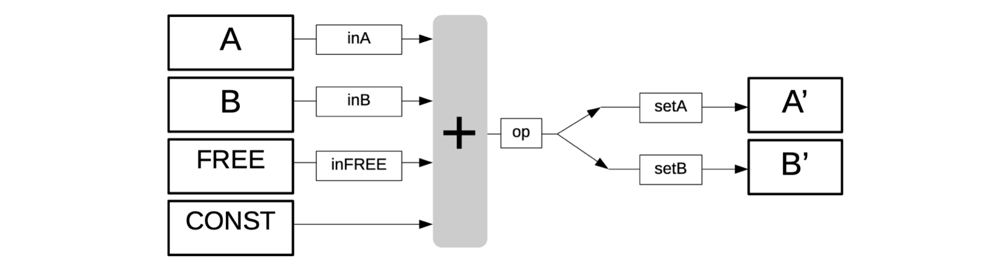
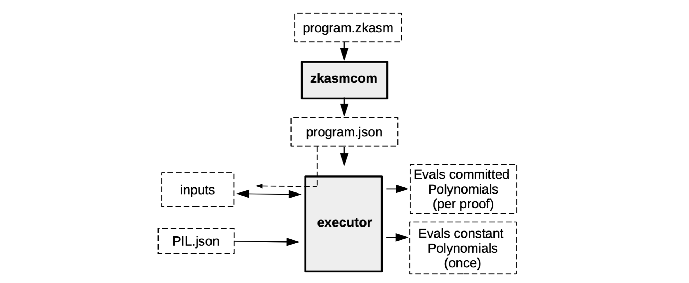
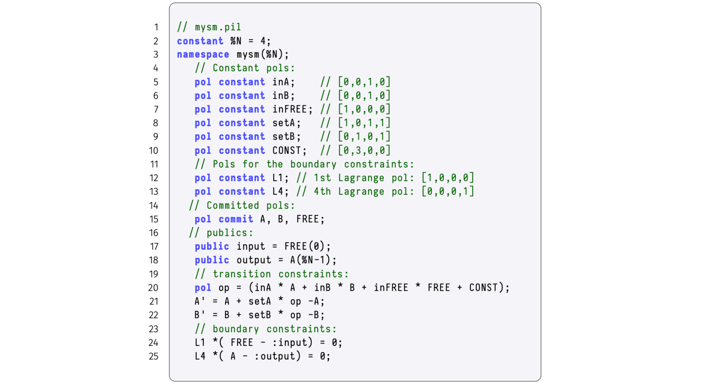
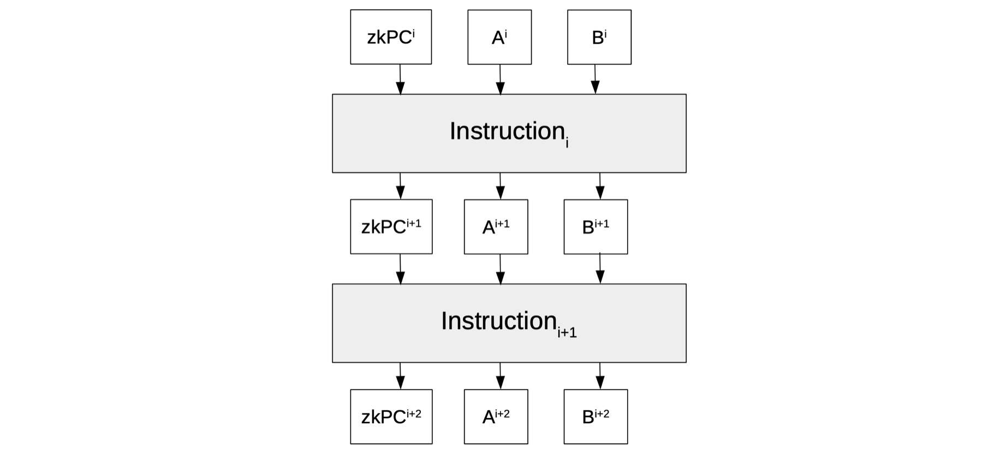
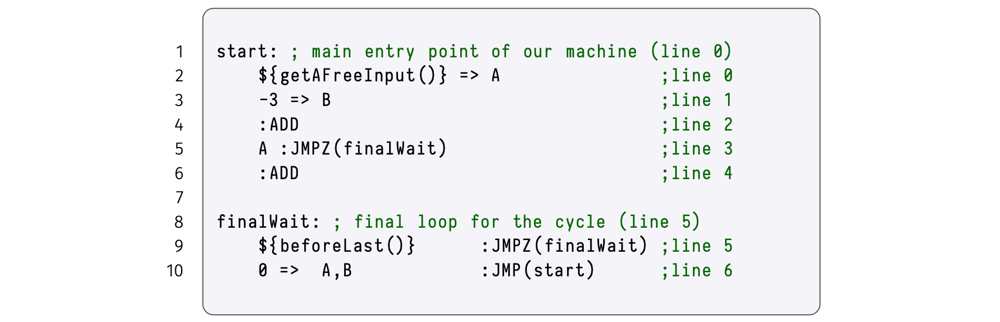

A Generic State Machine
Unlike the mFibonacci state machine, which is an implementation of one specific computation, we now describe a generic state machine that can be instantiated with various computations of the user's choice.
The idea here is to create a state machine that behaves like a processor of sorts. In as much as a processor has registries and a clock, so is our generic state machine. It receives instructions in the form of programs written in Assembly, and makes state transitions at each clock in accordance with these instructions.
See Figure below, for such a state machine, with registries \(\texttt{A}\) and \(\texttt{B}\), and a state \(\big(\texttt{A}^{\texttt{i}},\texttt{B}^{\texttt{i}}\big)\) that changes to another state \(\big(\texttt{A}^{\texttt{i+2}},\texttt{B}^{\texttt{i+2}}\big)\) in accordance with two instructions, \(\texttt{Instruction}_{\texttt{i}}\) and \(\texttt{Instruction}_{\texttt{i+1}}\).

The aim with this document is to explain how the machinery used in the mFibonacci SM; to execute computations, produce proofs of correctness of execution, and verify these proofs; can extend to a generic state machine.
Think of our state machine as being composed of two parts; the part that has to do with generating the execution trace, while the other part is focused on verifying that the executions were correctly executed.
- The former part is more like the "software" of the state machine, as it is concerned with interpreting program instructions and correctly generating the execution trace. A novel language dubbed the Zero-knowledge Assembly Language (zkASM) is used in this part.
- But the latter part is more like the "hardware" as it consists of a set of arithmetic constraints (or their equivalent, polynomial identities) that every correctly generated execution trace must satisfy. Since these arithmetic constraints are transformed into polynomial identities (via an interpolation process), they are described in a novel language called the Polynomial Identity Language (PIL).
Generic State Machine Executor
As seen with the mFibonacci SM, the SM executor takes certain inputs together with the description of the SM, in order to produce the execution trace specifically corresponding to these inputs.

The main difference in the Generic State Machine case, is the inclusion of a program which stipulates computations to be carried out by the SM executor. These computations could range from a simple addition of two registry values, or moving the value in registry \(\texttt{A}\) to registry \(\texttt{B}\), to computing some linear combination of several registry values.

So then, instead of programming the SM executor ourselves with a specific set of instructions as we did with the mFibonacci SM, the Generic SM executor is programmed to read arbitrary instructions encapsulated in some program (depending on the capacity of the SM or the SM's context of application). As mentioned above, each of these programs is initially written, not in a language like Javascript, but in the zkASM language.
An Example of State Machine Instructions
We continue with the state machine model shown in Figure 1 above; a state machine with two registries \(\texttt{A}\) and \(\texttt{B}\), which executes computations as per instruction(s) specified in a program.
Here is an example of a program containing four (4) instructions, expressed in zkASM,
Suppose the state machine starts with the initial state \(\big(\texttt{A},\texttt{B}\big) = \big(\texttt{0},\texttt{0} \big)\). The SM executor sequentially executes each instruction as follows;
- Firstly, "\(\mathtt{\$\{getAFreeInput()\} => A}\)" is a request to execute the function \(\texttt{getAFreeInput()}\). That is, the executor must get a free input value and move it into register \(\texttt{A}\). Note that "free input" simply means the input can be any value.
- Secondly, "\(\mathtt{3 => B}\)" means the executor must move the constant value \(\mathtt{3}\) into register \(\mathtt{B}\). Since the value \(\texttt{3}\) is part of an instruction, it is referred to as the constant of the execution. Also, it is called a constant because, for a given program, it cannot be freely chosen.
- Thirdly, "\(\mathtt{:ADD }\)" instructs the executor to compute the sum of registry values in \(\mathtt{A}\) and \(\mathtt{B}\), and save the output into register \(\mathtt{A}\).
- Lastly, "\(\mathtt{:END }\)" tells the executor to reset the registers \(\mathtt{A}\) and \(\mathtt{B}\) to their initial values in the next state, and thus achieving the cyclic behaviour.
Execution Trace (Example continued)
In addition to carrying out computations as per instructions in programs, the executor must also generate an execution trace of all state transitions, called the Execution Trace.
Consider, as an example, the execution trace the executor produces for the above program of four instructions. Suppose the free input value used is \(7\). The generated execution trace can be depicted in tabular form as shown below.
This execution trace utilises a total of six (6) columns. Perhaps the use of the columns corresponding to the two registries \(\texttt{A}\) and \(\texttt{B}\), as well as the columns for the constant \(\texttt{CONST}\) and the free input \(\texttt{FREE}\), are a bit obvious. But the reason for having the other two columns, \(\mathtt{A'}\) and \(\mathtt{B'}\), may not be so apparent.
The reason there are two extra columns, instead of only four, is the need to capture each state transition in full, and per instruction. The column labelled \(\mathtt{A'}\) therefore denotes the next state of the registry \(\mathtt{A}\), and similarly, \(\mathtt{B'}\) denotes the next state of the registry \(\mathtt{B}\). This ensures that each row of the execution trace reflects the entire state transition pertaining to each specific instruction.
The execution trace is therefore read row-by-row as follows,
- The first row, which is per instruction "\(\mathtt{\$\{getAFreeInput()\} => A}\)", reads thus: The function \(\texttt{getAFreeInput()}\) was executed, by getting the free input value of \(7\), which is to be moved into the registry \(\texttt{A}\) as the next registry value.
- The second row, which is per instruction "\(\mathtt{3 => B}\)", reads as follows: A constant value \(\texttt{3}\) is to be moved into the registry \(\texttt{B}\) as the next registry value, and the registry \(\texttt{A}\) now reflects the value \(\texttt{7}\) as expected per previous instruction.
- The third row, which is per instruction "\(\mathtt{:ADD }\)", indicates that: The executor executed the sum of registry values in \(\mathtt{A}\) and \(\mathtt{B}\) \(\big( \text{i.e.},\ \mathtt{7 + 3 = 10}\big)\) and the output \(\mathtt{10}\) is to be moved into register \(\mathtt{A}\), as \(\mathtt{A}\)'s next registry value.
- The last row, which is per instruction "\(\mathtt{:END }\)", tells us that: The executor has updated the registry value in \(\mathtt{A}\) according to the previous instruction, and will reset the registries \(\mathtt{A}\) and \(\mathtt{B}\) to zeros (their initial values) as their next registry values.
Note that, for this specific program, a change in the free input from \(7\) to another number would obviously yield a different execution trace, yet without violating the first instruction.
Assuring Correctness Of The Execution Trace
Next, we build a mechanism for verifying correctness of the execution trace. This requires creating a set of arithmetic constraints that only hold true when the execution trace is correct. These arithmetic constraints are equations that registry values in any two consecutive rows of the correct execution trace, must satisfy.
Similar to the mFibonacci SM, where each state had to conform to polynomial identities, the arithmetic constraints of the generic state machine will be translated into polynomial identities and ultimately be expressed in PIL.
Creating The Arithmetic Constraints
Since these arithmetic constraints govern state transitions, they express the next state \(\big(\mathtt{A'} ,\mathtt{B'}\big)\) in terms of current state \(\big(\texttt{A},\texttt{B}\big)\). That is, in terms of the execution trace, the new registry values are linear combinations of previous registry values, together with constants and free inputs.
We therefore need auxiliary columns called selectors. Like switches that can either be ON or OFF, selectors too can either have a value \(\mathtt{1}\) or \(\mathtt{0}\), depending on the instruction being executed.
In continuing with our example of a four-instruction state machine,
-
We use selectors; \(\texttt{inFREE}\), \(\texttt{inA}\), \(\texttt{inB}\), \(\texttt{setA}\) and \(\texttt{setB}\); corresponding to the columns; \(\texttt{FREE}\), \(\texttt{A}\), \(\texttt{B}\), \(\mathtt{A'}\) and \(\mathtt{B'}\), respectively.
-
If the instruction being executed involves a column \(\texttt{X}\), then the corresponding selector \(\texttt{inX}\) must have the value \(\mathtt{1}\), otherwise \(\texttt{inX}\) must be \(\mathtt{0}\).
- If the instruction being executed moves the result of the computation into column \(\mathtt{X'}\), then the corresponding selector \(\texttt{setX}\) must have the value \(\mathtt{1}\), otherwise \(\texttt{setX}\) must be \(\mathtt{0}\).
- Notice that \(\texttt{CONST}\) does not need a selector. If a computation constant is not needed in an instruction, the corresponding value in the \(\texttt{CONST}\) column is simply set to \(\texttt{0}\).
The arithmetic constraints are therefore defined by the following linear combinations;
The figure below, depicts the linear combinations of the our state machine as an algebraic processor of sorts.

The vertical gray box (with the "+" sign) in the above figure, denotes addition. It expresses forming linear combinations of some of the columns; \(\texttt{FREE}\), \(\texttt{A}\), \(\texttt{B}\), or \(\texttt{CONST}\). Each is either included or excluded from the linear combination depending on whether their corresponding selectors have the value \(\mathtt{1}\) or \(\mathtt{0}\).
See next subsection for an illustration of how this processor enables testing the constraints.
Testing Arithmetic Constraints Against Instructions
We now test if the arithmetic constraints tally with each of the four instructions of our program.
(a) The first instruction: "\(\mathtt{\$\{getAFreeInput()\} => A}\)".
The first instruction involves a free input \(7\) and this free input is moved into registry \(\texttt{A}\), as its the next value. Therefore, by definition of the selectors, \(\mathtt{inFREE = 1}\) and \(\mathtt{setA = 1}\). Also, the value of the other selectors is \(\texttt{0}\). Substituting these values in the above arithmetic constraints yields; $$ \mathtt{A′ = A + 1 \cdot \big( 0 \cdot A + 0 \cdot B + 1 \cdot 7 + 0 - A \big) = A + (7 - A) = 7}\text{} $$
$$ \mathtt{B′ = B + 0 \cdot \big( 0 \cdot A + 0 \cdot B + 1 \cdot 7 + 0 - B \big) = B}\qquad\qquad\quad \ $$ This illustrates that the value of the free input was moved into \(\texttt{A}\), while \(\texttt{B}\) remains unaltered. Hence, the first instruction was correctly executed.
(b) The second instruction: "\(\mathtt{3 => B}\)".
The second instruction involves the \(\mathtt{CONST}\) column, and the constant value \(\texttt{3}\) is moved into registry \(\texttt{B}\), as its next value. Consequently, \(\mathtt{CONST = 3}\) and \(\mathtt{setB = 1}\). All other selectors have the value \(\texttt{0}\). Again, substituting these values in the arithmetic constraints yields; $$ \mathtt{A′ = A + 0 \cdot \big( 0 \cdot A + 0 \cdot B + 0 \cdot FREE + 3 - A \big) = A}\qquad\qquad\qquad \ $$
$$ \mathtt{B′ = B + 1 \cdot \big( 0 \cdot A + 0 \cdot B + 0 \cdot FREE + 3 - B \big) = B + (3 - B) = 3} \ $$ This shows that the value of \(\texttt{A}\) was not changed, but the constant value \(\mathtt{3}\) was moved into \(\texttt{B}\). And thus, the second instruction was correctly executed.
(c) The third instruction, "\(\mathtt{:ADD }\)".
This instruction involves the registries \(\texttt{A}\) and \(\texttt{B}\), and the result is moved into registry \(\texttt{A}\), as its the next value. This means, the values of the corresponding selectors are as follows; \(\mathtt{inA = 1}\), \(\mathtt{inB = 1}\) and \(\mathtt{setA = 1}\). The arithmetic constraints become; $$ \mathtt{A′ = A + 1 \cdot \big( 1 \cdot A + 1 \cdot B + 0 \cdot FREE + 0 - A \big) = A + (A + B - A) = A + B}\text{ } \ $$
$$ \mathtt{B′ = B + 0 \cdot \big( 1 \cdot A + 1 \cdot B + 0 \cdot FREE + 0 - B \big) = B}\qquad\qquad\qquad\qquad\quad \ $$ The sum of the registry values in \(\mathtt{A}\) and \(\mathtt{B}\) was moved into \(\texttt{A}\), while \(\texttt{B}\) remains unmodified, proving that the third instruction was correctly executed.
(d) The fourth instruction, "\(\mathtt{:END }\)".
The fourth instruction moves the initial registry values (i.e., \(\mathtt{A = 0}\) and \(\mathtt{B_0 = 0}\)) into registries \(\texttt{A}\) and \(\texttt{B}\), as their next values, respectively. As a result, values of the corresponding selectors are; \(\mathtt{setA = 1}\) and \(\mathtt{setB = 1}\). Substitutions into the arithmetic constraints give us the following; $$ \mathtt{A′ = A + 1 \cdot \big( 0 \cdot A + 0 \cdot B + 0 \cdot FREE + 0 - A \big) = A - A = 0} \ $$
$$ \mathtt{B′ = B + 1 \cdot \big( 0 \cdot A + 0 \cdot B + 0 \cdot FREE + 0 - B \big) = B - B = 0} \ $$ Clearly, the next registry values of both \(\mathtt{A}\) and \(\mathtt{B}\) are reset to zeros as per the fourth instruction.
The execution trace can now be updated to reflect the selector columns, as shown below.
Remarks:
(a) The \(\texttt{CONST}\) column stores the constants of the computation. It should however, not be mistaken for a constant polynomial. The term 'constant' refers to the fact that the column contains constants of the computations.
(b) It shall be seen later, in our implementation of a state machine with jumps, that \(\texttt{CONST}\) is in fact a committed polynomial rather than a constant polynomial.
(c) All the operations in the constraints are carried out \(\mathtt{\ modulo }\) the order \(p\) of the prime field. The so-called Goldilocks-like Field, with \(p = 2^{64} − 2^{32} +1\), is mainly used where 64-bit numbers suffice (see Plonky2). Otherwise, the BN128 field is deployed.
In order to match the type of commitment scheme used in the zkEVM, these arithmetic constraints must first be expressed as polynomial identities, which are in turn compiled with PILCOM.
A Deeper Context For The Executor
Up to this stage, we have only mentioned that the SM executor reads instructions in a program written in zkASM, and it may take some free inputs in order to produce an execution trace. There is however a lot more detail that goes into this process.
For example, the executor does not really read the zkASM program as is. But rather, the zkASM program (which we name here, \(\texttt{program.zkasm}\)), is first compiled with a tool called \(\bf{zkasmcom}\), into a JSON file (call the JSON file, \(\texttt{program.json}\)).
Also, the free inputs may come in the form of another JSON file, let's name it \(\texttt{input.json}\). In addition, the executor can read information in databases and receive relevant input such as the \(\texttt{PIL.json}\). (As was seen in the case of the mFibonacci SM).
See Figure below for an concise description of what the executor does.

Although the execution trace is composed of the evaluations of the committed polynomials and the evaluations of the constant polynomials, the two evaluations do not happen simultaneously.
Instead, the constant polynomials are preprocessed only once, because they do not change and are specific for a particular state machine.
The committed polynomials, on the other hand, can vary. And are therefore only processed as and when their corresponding verifiable proof is required.
Polynomial Identities
For verification purposes, the execution trace need to be interpolated into polynomial identities.
The general theory on interpolation of polynomials involves technical terms such as; Lagrange's interpolation, roots of of unity and Fast Fourier Transforms. However, these concepts are not prerequisites because the way we construct the execution trace, makes sure the polynomial identities follow readily from the arithmetic constraints.
In the above example of a zkASM program with four instructions, we can use the fourth-roots of unity \(\mathcal{H} = \{ 1 = \omega^4, \omega, \omega^2, \omega^3 \} \subset \mathbb{F}_p\) to interpolate, such that the columns, $$ \mathtt{ A, inA, setA, B, inB, setB, FREE, inFREE, CONST } $$ correspond to polynomials in \(\texttt{x}\) , where \(\mathtt{x = \omega^i}\), written (without changing symbols) as, $$ \mathtt{ A(x), inA(x), setA(x), B(x), inB(x), setB(x), FREE(x), inFREE(x), CONST(x)}. $$ That is, according to the execution trace in Table 3 above, these polynomials are equivalent to the column-arrays, as follows, $$ \mathtt{A = [0,7,7,10]}\text{ } \iff\text{ } \mathtt{ A(x) = A(\omega^i) = A[i]}\qquad\quad\qquad\qquad\qquad\text{ } \ $$
The arithmetic constraints seen above as \(\bf{Eqn\ 1(a)}\) and \(\bf{1(b)}\), are easily written as polynomial identities, as follows, $$ \mathtt{A(x\omega) - \big(A(x) + setA(x) \cdot \big( op(x) - A(x) \big) \big) = 0} \ $$
where
As far as boundary constraints are concerned, we can, for instance,
-
make both the free input and the last registry value of \(\mathtt{A}\) public,
-
create public 'variables'; \(\texttt{input}\) and \(\texttt{output}\),
-
set boundary constraints, $$ \mathtt{L1(x) \cdot \big(FREE(\omega^0) - input\big) = 0} \ \mathtt{L2(x) \cdot \big(A(\omega^{3}) - output\big) = 0}\quad \ $$ where \(\mathtt{L1(x)}\) and \(\mathtt{L2(x)}\) are precomputed constant polynomials. In fact, \(\mathtt{L1(x) = [1,0,0,0]}\) and \(\mathtt{L2(x) = [0,0,0,1]}\).
In the big scheme of things, these are Lagrange polynomials emanating from the interpolation.
Verification relies on the fact that: These polynomial identities, including the boundary constraints, hold true if, and only if the execution trace is correct and faithful to the instructions in the zkASM program.
The PIL description of the SM executor, reading instructions from the zkASM program with four instructions, is depicted in the Figure below.

Dealing With Negative Numbers
In this subsection we make a few remarks on how to handle negative numbers.
Recall that all values of the execution trace belong to a field \(\mathbb{F}_p\) where \(p=2^{64} −2^{32} +1\). Since, for all \(\mathtt{x \in \mathbb{F}_p }\), $$ \mathtt{(p-x) + x \equiv p \texttt{ modulo } p} $$ and \(\mathtt{p \equiv 0 \texttt{ modulo } p}\), it follows that \(\mathtt{-x \equiv p-x \texttt{ modulo } p}\). Therefore, any negative number \(\mathtt{-a}\) is interpreted as \(\mathtt{p − a}\).
We consider a zkASM program with four instructions as before, except that it now moves a negative constant into registry \(\mathtt{B}\). The execution trace with free input \(\mathtt{7}\) is as a follows,
Using Conditional Jumps
The FFTs are most efficient for polynomials of degree \(\mathtt{T + 1 = 2^N}\). This causes descrepancies when the program being executed has fewer instructions than an appropriate power of \(2\).
Consider the following program with five (5) instructions, and its corresponding execution trace:
The question is: How (or when) to end the program when the trace has size \(\mathtt{5}\) and the polynomials have \(\mathtt{8}\) evaluations?
Naïve Way To End The Program
A simple fix could be: Repeating the "\(\texttt{:END}\)" instruction in order to fill the execution trace up to the eighth row. But, for the sake of preserving the cyclicity of the state machine, the last instruction must ensure that the next values of registries revert back to their initial values.
Note that, since there are no restrictions placed on the next values of \(\mathtt{A'}\) and \(\mathtt{B'}\), we can set these to any values. In the above case, both \(\mathtt{A'}\) and \(\mathtt{B'}\) are set to zeros.
Conditional Jumps Examples
We now add to the zkASM program, the instruction "\(\text{jump to a particular address if ... }\)", denoted by \(\mathtt{JMPZ(addr)}\). Which means the executor must jump to the specified position in the program on condition that the preceding operation, denoted by \(\texttt{op}\), is zero.
Since this instruction needs to specify the destination of the jump, we need to add the line at which each instruction is placed in the program. This is shown in the table below.
With regards to the instruction "\(\texttt{A:JMPZ(5)}\)" in \(\texttt{line}\) \(\texttt{3}\) of the zkASM program,
(a) The \(\texttt{A}\) registry, preceding the colon, means that \(\texttt{op}\) is set to the value of \(\texttt{A}\).
(b) If \(\texttt{op = 0}\), the program jumps to $\texttt{line} $ \(\texttt{5}\).
(c) If \(\mathtt{op \not= 0}\), the program continues sequentially with the instruction at $\texttt{line} $ \(\texttt{4}\).
Programs With Conditional Jumps
Suppose the executor of our SM reads a zkASM program where one of its instructions requires a free input to be taken. The aim here is to observe how a variation in free inputs affects the length of the execution trace.
For the sake of brevity, we present execution traces with only five columns (i.e., we omit the columns corresponding to the selectors and setters).
Example A: (Execution Trace with \(\mathtt{FREE = 7}\))
In this example, the free input is \(\mathtt{FREE = 7}\). Focusing on \(\texttt{line}\) \(\texttt{3}\): Since in the previous operation, \(\mathtt{op=ADD}\) and \(\mathtt{A = A + B = 4 \not= 0}\), and thus the condition for the \(\texttt{JMPZ}\) is not satisfied. There's no jump. The execution continues sequentially to the instruction in \(\texttt{line}\) \(\texttt{4}\). The resulting execution trace is therefore \(6\) steps long.
Example B: (Execution Trace with \(\mathtt{FREE = 3}\))
In this case, the free input is \(\mathtt{FREE = 3}\). Again, focusing on \(\texttt{line}\) \(\texttt{3}\): Since in the previous operation, \(\mathtt{op=ADD}\) and \(\mathtt{A = A + B = 0}\), it means the condition for the \(\texttt{JMPZ}\) is satisfied. Hence the executor jumps to \(\texttt{line}\) \(\texttt{5}\) as per instruction in \(\texttt{line}\) \(\texttt{3}\). The execution trace is now only \(5\) steps long.
We observe that the inclusion of conditional jumps in the zkASM programs introduces dynamics to the executor's output. For example, the instructions in the zkASM program (in Example B) are not sequentially executed. This requires more agility in our proving system, more especially that our aim is to lighten the verifier's work.
Correctness Checks For State Machines With Jumps
The dynamism brought about by the inclusion of jumps in our zkASM programs means more checks need to be added, in order to prove correct behaviour of the state machine.
Since the instructions require the executor to perform varied operations, and these operations are not sequentially executed due to the presence of jumps, we need to do a few more checks;
- Check Program Operations.
Every operation being executed needs to be checked if it is the correct one. That is, if the instruction is an \(\texttt{ADD}\), then we must check that indeed an \(\texttt{ADD}\) was performed and not a different operation.
- Check Instructions’ Sequence.
The sequence in which the operations are executed must tally with the instructions in the zkASM program, and not necessarily their usual chronological sequence of the lines of code. e.g., The lines of instructions executed in Example B above, are lines \(\texttt{ 0, 1, 2, 3, 5,}\) where \(\texttt{line}\) \(\texttt{4}\) was skipped.
Note that more complicated programs can be built, where for instance, the SM execution jumps to a previous line of code, and thus repeating execution of some instructions.
- Correct program ending.
How the program ends also needs to be managed. Due to the presence of jumps, the length of the execution trace is no longer constant for the same program if the free inputs are varied.
- Publics Are Placed At Known Steps.
We must ensure that all \(\texttt{publics}\) (the inputs and the outputs) are in the known position. So, \(\texttt{publics}\) should be placed at known steps. This ensures that the SM's PIL does not have to change with every execution.
For this reason, \(\texttt{publics}\) are going to be placed in either the first positions of the polynomial or the last positions of the polynomial (these are specified positions in the arrays representing the columns of the trace).
- Correct Program (ROM) Execution.
Although the polynomial identities are there to monitor correct state transitions (checking that each instruction does what it is supposed to do), and also that the correct sequence of instructions is followed, one still needs to make sure the instruction being executed belongs to the program in the first place. So, if for instance, the third instruction is being executed, is it really the third instruction of the right program or not.
One of the implications of a dynamic execution trace, due to the inclusion of jumps, is that some of the previously constant (or preprocessed) polynomials must now be committed polynomials.
If we are going to allow polynomials (i.e., columns in the execution trace) corresponding to the instructions to be committed, we need to be cautious that only instructions belonging to the right program are being executed. For this purpose, we are going to use a tool called \(\mathbf{Plookup}\).
Checking Sequence Of Instructions
In order to keep track of which line of the program is currently being executed, a new registry called "Program Counter" is added to the state machine.
We denote it by \(\texttt{zkPC}\) because it is verified in a zero-knowledge manner.
The \(\texttt{zkPC}\) is therefore a new column of the execution trace and it contains, at each clock, the line in the zkASM program of the instruction being executed.

In addition to the \(\texttt{JMPZ(addr)}\), an unconditional jump instruction \(\texttt{JMP(addr)}\) is allowed in the zkASM program.
Unlike the \(\texttt{JMPZ(addr)}\) instruction, when the state machine executes \(\texttt{JMP(addr)}\), it must jump to the line \(\texttt{addr}\), irrespective of what the value of \(\texttt{op}\) is.
The Program Counter Constraint Related To \(\texttt{JMP}\)
This is how the \(\texttt{JMP(addr)}\) instruction is implemented: A new selector called \(\texttt{JMP}\) is added, as a column to the execution trace. And, the Program Counter \(\texttt{zkPC}\) now uses the following identity to keep track of the correct line of the assembly program to be executed next; $$ \mathtt{zkPC' = (zkPC+1)+JMP \cdot \big(addr−(zkPC+1)\big)} \tag{Eqn 2*} $$ \(\texttt{JMP}\) therefore acts as a 'flag' where;
- if \(\texttt{JMP}\) is not activated (i.e., if \(\texttt{JMP}\) is \(\mathtt{0}\)),
- otherwise, if \(\texttt{JMP}\) is activated (i.e., if \(\texttt{JMP}\) is \(\mathtt{1}\)),
Note that execution continues with the next chronological line of instruction \(\texttt{zkPC+1}\) when \(\texttt{JMP}\) is \(\mathtt{0}\), but otherwise proceeds to execute the instruction in line number \(\texttt{addr}\).
The Program Counter Constraint Related To \(\texttt{JMPZ}\)
The \(\texttt{JMPZ(addr)}\) similarly needs a selector to be added as an extra column to the execution trace, call it \(\texttt{JMPZ}\). Since the \(\texttt{JMPZ(addr)}\) instruction is executed only on condition that \(\texttt{op}\) is zero, we introduce a flag called \(\mathtt{isZero}\), such that;
\(\mathtt{isZero = 1}\) if \(\texttt{op = 0}\), and \(\mathtt{isZero = 0}\) if \(\mathtt{op \not= 0}\).
This means \(\texttt{op}\) and \(\mathtt{isZero}\) satisfy the following constraint,
Note that \(\texttt{op}\) is a field element, and every non-zero element of the prime field \(\mathbb{F}_p\) has an inverse. That is, \(\texttt{op}^{-1}\) exists if and only if \(\mathtt{op \not= 0}\). The following constraint together with \(\text{Eqn 3*}\) can be used to check whether \(\texttt{op}\) and \(\mathtt{isZero}\) are as required, $$ \mathtt{isZero\ := (1 − op \cdot op^{−1})} \tag{Eqn 4*} $$
Since \(\mathtt{JMPZ = 1}\) only if \(\texttt{JMPZ(addr)}\) is the very instruction in the line currently being executed, and \(\mathtt{zkPC' = addr}\) only if \(\mathtt{isZero = 1}\).
It follows that the factor \((\mathtt{JMPZ \cdot isZero})\) \(\mathtt{ = 1}\) only if both \(\texttt{JMPZ}\) \(\mathtt{= 1}\) and \(\mathtt{isZero}\) \(\mathtt{= 1}\) hold true.
Hence, the following constraint enforces the correct sequence of instructions when \(\texttt{JMPZ}\) is executed;
In order to ascertain correct execution of the \(\texttt{JMPZ(addr)}\) instruction, it suffices to check the above three constraints; \(\text{Eqn 2*}\), \(\text{Eqn 2*}\) and \(\text{Eqn 4*}\).
Note that \(\mathtt{op^{−1}}\) is not part of any instruction. The evaluations of \(\mathtt{op^{−1}}\) therefore have to be included in the execution trace as a committed polynomial, and thus enables checking the first identity, \(\text{Eqn 2*}\).
Most importantly, we rename the polynomial \(\mathtt{op^{−1}}\) as \(\texttt{invOp}\).
The Program Counter Constraint Related To \(\texttt{JMP}\) And \(\texttt{JMPZ}\)
All four constraints, \(\text{Eqn 0*}\), \(\text{Eqn 1*}\), \(\text{Eqn 2*}\) and \(\text{Eqn 3*}\) can be merged as follows;
Define "\(\texttt{addr}\)" as an intermediate polynomial, $$ \mathtt{ addr := offset}, \tag{Eqn 7*} $$ where \(\texttt{offset}\) is provided as part of the jump instructions, \(\texttt{JMPZ(addr)}\) and \(\texttt{JMP(addr)}\).
We now have the following new columns in the execution trace,
With the intermediate definition in \(\text{Eqn 7*}\) , we are preparing the path to expanding the \(\texttt{addr}\) definition, for example, to include other sources (apart from instructions) from which to get the destination address in jumps.
Correct Program Ending With A Loop
We have previously resorted to ending our program by repeating the "\(\texttt{:END}\)" instruction. This was not the best solution.
To properly finish our programs, we need to ensure that the execution trace generated from the assembly is cyclic.
We therefore utilise a loop while the current \(\texttt{line}\) is less than \(\mathtt{N-1}\), a step before the last step of the execution trace. That is, before jumping back to the start, with the \(\texttt{JMP(start)}\) instruction, the current \(\texttt{line}\) is checked with the function "\(\texttt{beforeLast()}\)".
So, we query the executor for when the execution trace is at its last but one row, with the following line of code, $$ \mathtt{${beforeLast()}\ \ :JMPZ(finalWait)} ; $$ See Figure 8 for the zkASM code.
The assembly program uses labels instead of explicit line numbers, hence conforming to how assembly programs are typically written. Labels are convenient because with them, the assembly compiler can take care of computing actual line numbers. For instance, as in Figure 8 below; \(\mathtt{start}\) is line \(\mathtt{0}\) and \(\mathtt{finalWait}\) is line \(\mathtt{5}\).

Step-by-step Commentary On The Execution Trace
The intention here to give a step-by-step commentary on the execution trace for the Assembly code in Figure 8 above, for a free input equal to \(\mathtt{3}\) and a trace size (interpolation size) equal to \(\texttt{N = 8}\).
We show the values corresponding to each \(\texttt{step}\) of the execution trace, particularly for,
- The committed polynomials that form part of the instruction; \(\texttt{CONST}\), \(\texttt{offset}\), \(\texttt{JMP}\), \(\texttt{JMPZ}\), \(\texttt{setB}\), \(\texttt{setA}\), \(\texttt{inFREE}\), \(\texttt{inB}\), \(\texttt{inA}\), \(\texttt{zkPC}\) and \(\mathtt{zkPC'}\).
- The committed polynomials that are only part of the trace; \(\texttt{FREE}\), \(\texttt{A}\), \(\mathtt{A'}\), \(\texttt{B}\), \(\mathtt{B'}\) and \(\texttt{invOp}\).
- The intermediate polynomials \(\texttt{Im}\), which are just intermediate definitions; \(\texttt{op}\), \(\texttt{isZero}\) and \(\texttt{doJMP}\).
Step 0: "\(\mathtt{\${getAFreeInput()} => A}\)"
Since the instruction here at \(\texttt{Step}\) \(\mathtt{0}\) (corresponding to \(\texttt{line}\) \(\texttt{0}\) of the Assembly code) requires a free input \(\mathtt{3}\) to be taken and moved into the registry \(\mathtt{A}\), the values of the involved polynomials are therefore; $$ \mathtt{inFREE = 1},\ \mathtt{FREE = 3},\ \mathtt{setA = 1},\ \mathtt{A' = 3}\ \texttt{and}\ \mathtt{CONST = 0}. $$ As a result, $$ \mathtt{op\ =\ inA \cdot A\ +\ inB \cdot B\ +\ inFREE \cdot FREE\ +\ CONST = 0 \cdot A\ +\ 0 \cdot B\ +\ 1 \cdot 3\ +\ 0\ = 3} $$ and \(\mathtt{invOp = 3^{-1}}\).
Regarding the Program Counter; First note that initially \(\mathtt{zkPC = 0}\). And, since \(\mathtt{op = 3}\) and \(\mathtt{invOp = 3^{-1}}\), then $$ \mathtt{isZero\ := (1 − op \cdot op^{−1}) = (1 − 3 \cdot 3^{−1}) = 0}.\qquad\qquad\qquad\qquad\text{ }\qquad \ $$ Also, since there are no jumps in the instruction, \(\mathtt{JMP = 0}\) and \(\mathtt{JMPZ = 0}\), and therefore \(\mathtt{zkPC′ = zkPC + 1}\).
We use Eqn 4* to check whether \(\mathtt{zkPC′ = zkPC + 1 = 0+1 = 1}\).
First, note that,
This means, according to Eqn 4*,
Step 1: "\(\mathtt{\mathtt{-3 => B}}\)"
In this step, a constant \(\mathtt{CONST = -3}\) is moved into the \(\texttt{B}\) registry. Hence \(\mathtt{setB = 1}\), \(\mathtt{B' = -3}\), but \(\mathtt{inB = 0}\), \(\mathtt{inA = 0}\) and \(\mathtt{inFREE = 0}\). This yields, $$ \mathtt{op =\ inA \cdot A\ +\ inB \cdot B\ +\ inFREE \cdot FREE\ +\ CONST\ =\ 0 \cdot A\ +\ 0 \cdot B\ +\ 0 \cdot FREE\ + (-3) = -3} $$ and \(\mathtt{invOp = (-3)^{-1}}\).
So, \(\mathtt{isZero\ := (1 − op \cdot op^{−1}) = \big(1 − (-3) \cdot (-3)^{−1}\big) = 0}\).
Again, the absence of jumps in the instruction means, \(\mathtt{JMP = 0}\) and \(\mathtt{JMPZ = 0}\). And therefore \(\mathtt{zkPC′ = zkPC + 1}\).
Again, we use Eqn 4* to check whether \(\mathtt{zkPC′ = zkPC + 1 = 1+1 = 2}\).
Note that, $$ \mathtt{doJMP := JPMZ \cdot isZero + JMP = 0 \cdot 0 + 0 = 0}. \qquad\qquad\qquad\qquad\qquad \ $$ Since \(\mathtt{zkPC = 1}\), the next value of the Program Counter (according to Eqn 4*) must therefore be, $$ \mathtt{zkPC′ = (zkPC+1)+doJMP \cdot \big(addr−(zkPC+1)\big) = (1+1) + 0 \cdot \big( addr−(1+1) \big) = 2}. $$
Here is the execution trace thus far;
Step 2: "\(\mathtt{ :ADD}\)"
Here the sum of the registry values \(\mathtt{A = 3}\) and \(\mathtt{B = -3}\) is computed, and the result is moved into the registry \(\mathtt{A}\). That is, \(\mathtt{A' = 3 + (-3) = 0}\) and \(\mathtt{setA = 1}\). Also, \(\mathtt{inA = 1}\) , \(\mathtt{inB = 1}\) and \(\mathtt{inFREE = 0}\).
These values yield the following value of \(\mathtt{op}\), $$ \mathtt{op\ =\ inA \cdot A\ +\ inB \cdot B\ +\ inFREE \cdot FREE\ +\ CONST\ =\ 1 \cdot 3\ +\ 1 \cdot (-3)\ +\ 0 \cdot FREE\ +\ 0\ =\ 0}. $$ So, \(\mathtt{invOp}\) is set to a randomly chosen non-zero \(\mathtt{\alpha}\) in \(\mathbb{F}_p\) , used to pass the identities related to \(\texttt{isZero}\).
And, \(\mathtt{isZero\ := (1 − op \cdot invOp) = \big(1 − 0\cdot \alpha \big)\ =\ 1}\).
Note that there are no jumps in the instruction, so \(\mathtt{JMP = 0}\) and \(\mathtt{JMPZ = 0}\). And therefore \(\mathtt{zkPC′ = zkPC + 1}\).
In order to verify that \(\mathtt{zkPC′ = zkPC + 1 = 2 + 1 = 3}\), we use the constraints given as Eqn 4* above.
Firstly, check \(\mathtt{doJMP}\) as follows, $$ \mathtt{doJMP\ :=\ JPMZ \cdot isZero + JMP\ = 0 \cdot 1\ +\ 0\ =\ 0}. \qquad\qquad\qquad\qquad\qquad \ $$ Then, $$ \mathtt{zkPC′ = (zkPC+1)+doJMP \cdot \big(addr−(zkPC+1)\big) = (2+1)\ +\ 0 \cdot \big( addr - (2+1)\big)\ =\ 3}. $$ The Program Counter therefore moves to the subsequent line of instruction. That is, the next instruction to be executed must the one in \(\texttt{line}\) \(\texttt{3}\) of the Assembly code.
Step 3: "\(\mathtt{ A \quad :JMPZ(finalWait)}\)"
According this instruction, the executor has to jump on condition that \(\texttt{A}\) is \(\mathtt{0}\), otherwise there is no jump. The polynomials immediately involved in this instruction are \(\mathtt{inA}\) and \(\mathtt{JMPZ}\). Therefore, \(\mathtt{inA = 1}\) and \(\mathtt{JMPZ = 1}\).
As mentioned above, the implicit address label "\(\mathtt{finalWait}\)" is computed by the Assembly compiler, and in this example, that address is \(\mathtt{line}\) \(\mathtt{5}\). That is, \(\mathtt{offset = 5}\). It follows that \(\mathtt{zkPC′ = 5}\).
Note that, \(\mathtt{inB = 0}\) , \(\mathtt{inFREE = 0}\) and \(\mathtt{CONST = 0}\). Therefore, $$ \mathtt{op\ =\ inA \cdot A\ +\ inB \cdot B\ +\ inFREE \cdot FREE\ +\ CONST\ =\ 1 \cdot 0\ +\ 0 \cdot (-3)\ +\ 0 \cdot FREE\ +\ 0\ =\ 0}. $$ Consequently, \(\mathtt{isZero\ := (1 − op \cdot invOp) = \big(1 − 0 \big)\ =\ 1}\).
Since there are no unconditional jumps, \(\mathtt{JMP = 0}\). We use Eqn 4* to check whether \(\mathtt{zkPC′ = 5}\). Note that,
The next value of the Program Counter, according to Eqn 4*, is
Step 4: "\(\mathtt{\{beforeLast()\}\quad:JMPZ(finalWait)}\)"
The \(\texttt{beforeLast()}\) function, which keeps track of the number of steps being executed, reads the current step-number as a free input. Since the execution trace is currently at step \(\mathtt{4}\) and not \(\mathtt{6}\), then the executor returns a zero. And thus, \(\mathtt{inFREE = 1}\) and \(\mathtt{JMPZ = 1}\) but \(\mathtt{inA = 0}\), \(\mathtt{inB =0}\), \(\mathtt{FREE = 0}\) and \(\mathtt{CONST = 0}\). Consequently, $$ \mathtt{op\ =\ inA \cdot A\ +\ inB \cdot B\ +\ inFREE \cdot FREE\ +\ CONST\ =\ 0 \cdot A\ +\ 0 \cdot B\ +\ 1 \cdot 0\ +\ 0\ =\ 0}. $$ Therefore \(\mathtt{isZero \ := (1 − op \cdot invOp)\ = (1 − 0 \cdot \alpha) = 1}\). Hence according to \(\texttt{JMPZ(finalWait)}\), a jump is executed. This means the executor must jump to the \(\mathtt{offset = 5}\) address, as computed by the Assembly compiler. It follows that \(\mathtt{zkPC′}\) must be \(\mathtt{5}\).
Let us use Eqn 4* to check if indeed \(\mathtt{zkPC′ = 5}\). We first note that, there are no unconditional jumps, so \(\mathtt{JMP = 0}\). And,
The next value of the Program Counter is given by,
The execution trace is currently as follows,
Step 5: "\(\mathtt{\{beforeLast()\}\quad:JMPZ(finalWait)}\)"
As seen in Step 4, the \(\texttt{beforeLast()}\) function checks if the execution trace is currently at Step 6. Since the current step is \(\mathtt{5}\) and not \(\mathtt{6}\), the executor returns a zero.
Similarly, \(\mathtt{inFREE = 1}\) and \(\mathtt{JMPZ = 1}\) but \(\mathtt{inA = 0}\), \(\mathtt{inB =0}\), \(\mathtt{FREE = 0}\) and \(\mathtt{CONST = 0}\). As a result, $$ \mathtt{op\ =\ inA \cdot A\ +\ inB \cdot B\ +\ inFREE \cdot FREE\ +\ CONST\ =\ 0 \cdot A\ +\ 0 \cdot B\ +\ 1 \cdot 0\ +\ 0\ =\ 0}, $$ which means \(\mathtt{FREE = 0}\) and \(\mathtt{isZero \ := (1 − op \cdot invOp)\ = (1 − 0 \cdot \alpha) = 1}\). So, again \(\texttt{JMPZ(finalWait)}\) gets executed.
The absence of unconditional jumps means \(\mathtt{JMP = 0}\), while \(\mathtt{JMPZ = 1}\). Since \(\mathtt{offset = 5}\), the Program Counter, \(\mathtt{zkPC′}\), must in the next step be \(\mathtt{5}\).
We verify this by first checking $$ \mathtt{doJMP := JPMZ \cdot isZero + JMP = 1 \cdot 1 + 0 = 1}, \qquad\qquad\qquad\qquad\qquad \ $$ and use Eqn 4*, $$ \mathtt{zkPC′ = (zkPC+1)+doJMP \cdot \big(addr−(zkPC+1)\big)\ =\ (5+1)\ +\ 1 \cdot \big(5−(5+1)\big)\ =\ 6 + (5-6)\ =\ 5.} $$
Step 6: "\(\mathtt{\{beforeLast()\}\quad:JMPZ(finalWait)}\)"
In this case, the current step is the last but one step. That is, the \(\texttt{beforeLast()}\) function holds true, and hence the executor must return a \(\mathtt{1}\). So, \(\mathtt{inFREE = 1}\) and \(\mathtt{JMPZ = 1}\) while \(\mathtt{inA = 0}\), \(\mathtt{inB =0}\) and \(\mathtt{CONST = 0}\). Then, $$ \mathtt{op\ =\ inA \cdot A\ +\ inB \cdot B\ +\ inFREE \cdot FREE\ +\ CONST\ =\ 0 \cdot A\ +\ 0 \cdot B\ +\ 1 \cdot 1\ +\ 0\ =\ 1}. $$ This means \(\mathtt{FREE = 1}\) and \(\mathtt{isZero \ := (1 − op \cdot invOp)\ = (1 − 1 \cdot 1) = 0}\). And, this time \(\texttt{JMPZ(finalWait)}\) is not executed, implying the next Program Counter, \(\mathtt{zkPC′ = zkPC + 1}\).
Since there are no jumps in this step, \(\mathtt{JMP = 0}\) and \(\mathtt{JMPZ = 0}\), yielding $$ \mathtt{doJMP := JPMZ \cdot isZero + JMP = 0 \cdot 1 + 0 = 0}, \ $$ and with a quick verification using Eqn 4*, we obtain $$ \mathtt{zkPC′ = (zkPC+1)+doJMP \cdot \big(addr−(zkPC+1)\big)\ =\ (5+1)\ +\ 0 \cdot \big(addr −(5+1)\big)\ =\ 6.} $$
Step 7: "\(\mathtt{0 => A,B\quad\ :JMP(start)}\)"
The aim with this instruction is to complete the execution trace such that it is of the correct size (which is \(\mathtt{8}\) in this example).
It ends the execution by setting \(\texttt{A}\) and \(\texttt{B}\) to zero, and jumps to \(\mathtt{start}\), which is line \(\mathtt{0}\). And thus, \(\mathtt{zkPC'}\) must be \(\mathtt{0}\). Hence, \(\mathtt{setA = 1}\), \(\mathtt{setB = 1}\) and \(\mathtt{JMP = 1}\) but \(\mathtt{inFREE = 0}\), \(\mathtt{inA =0}\), \(\mathtt{inB =0}\) and \(\mathtt{CONST = 0}\). Consequently, $$ \mathtt{op\ =\ inA \cdot A\ +\ inB \cdot B\ +\ inFREE \cdot FREE\ +\ CONST\ =\ 0 \cdot 0\ +\ 0 \cdot (-3)\ +\ 0 \cdot 1\ +\ 0\ =\ 0}. $$ Therefore \(\mathtt{isZero \ := (1 − op \cdot invOp)\ = (1 − 0 \cdot \alpha) = 1}\).
There are no conditional jumps, so \(\mathtt{JMPZ = 0}\). Then, as a consequence of this, $$ \mathtt{doJMP := JPMZ \cdot isZero + JMP = 0 \cdot 1 + 1 = 1}. \ $$ The constraint in Eqn 4* verifies the next value of the Program Counter as follows, $$ \mathtt{zkPC′ = (zkPC+1)+doJMP \cdot \big(addr−(zkPC+1)\big)\ =\ (6+1)\ +\ 1 \cdot \big(0 −(6+1)\big)\ =\ 0.} $$
This instruction, as the last step the Assembly program, achieves two things; Firstly, the program ends correctly with the specified size of the execution trace. Secondly, resetting \(\texttt{A}\), \(\texttt{B}\) and \(\texttt{zkPC}\) to zero causes the execution trace to attain cyclicity.
See the complete execution trace below,
In conclusion, our Assembly program uses jumps to create a loop in its execution. That is, at the right point of the execution, when the registry values of interest have been attained, the executor retains these values until the execution trace is in the last but one row. This way, the result of the computations can be reflected in the last position of the registry \(\mathtt{A}\), in the last row of the execution trace, which is the output of the mFibonacci state machine.
Note that in cases where the jumps are such that \(\mathtt{offset}\) is one of the previous addresses, the length of the execution trace can turn out to be much bigger than the final value of the Program Counter. i.e., \(\mathtt{zkPC \leq 2^N - 1}\) where \(\mathtt{2^N -1}\) is the degree of the state machine polynomials.
Publics Placed at Known Steps
Regarding the \(\texttt{publics}\), it is best to place these at specific and known steps.
Notice that, in the above example, the final loop added to Assembly program repeats the values of the registries \(\mathtt{A}\) and \(\mathtt{B}\) until they are reset to Step \(\mathtt{0}\).
So if, for example, the execution result or state machine output is the state of registry \(\mathtt{A}\) at the end of all the instructions, we will find this value at \(\mathtt{A(N-1)}\).
This is important for verification purposes, because then, we need only add the proper boundary constraint in the PIL, referencing a specific step in the execution trace.